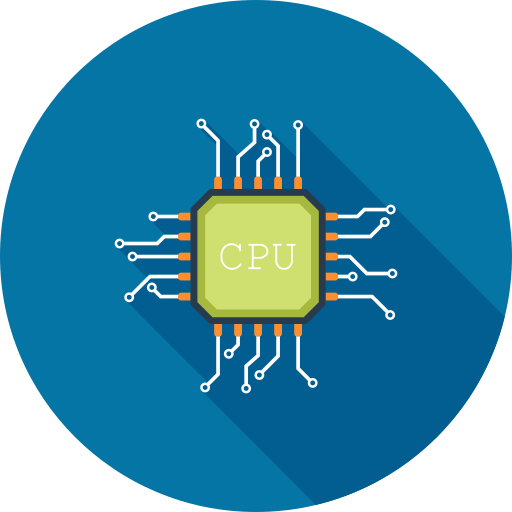
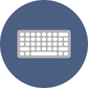
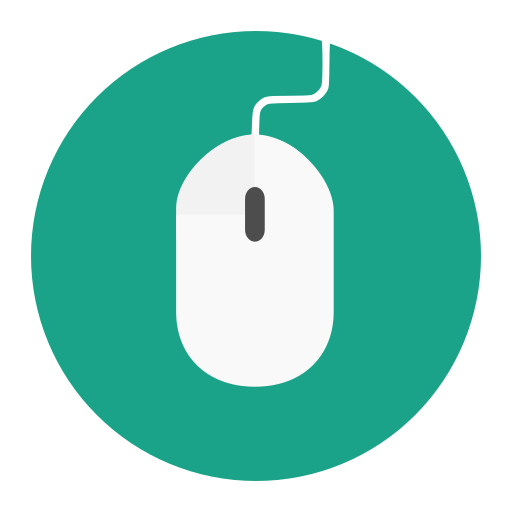

-La computadora-
beneficios y estrategias que hicen más fácil la vida del hombre
Máquina electrónica capaz de almacenar información y tratarla automáticamente mediante operaciones matemáticas y lógicas controladas por programas informáticos. 🖥️


-CPU-

-TECLADO-
